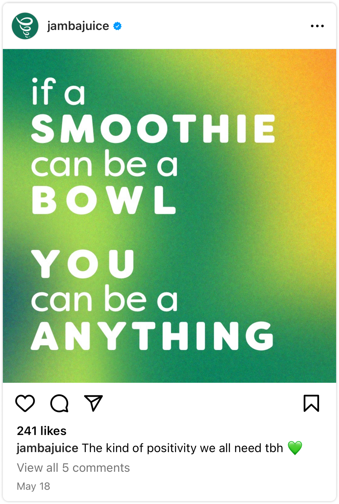

Balancing Effectiveness and Fun in a Design System for Jamba Juice
Jamba Juice is an American smoothie and juice bar chain that promotes wellness and delight through their products and playful branding. We created a design system called JJ (short for Jamba Juice), including a UI kit and documentation website, to improve the consistency and accessibility of Jamba's digital products. As a Jamba product itself, JJ expresses the creativity and delight that are foundational to the brand while also incorporating the usability and flexibility of a powerful design system.
When: September - December 2023
Teammates: Alexis Li & Keyi Zhang
My Role: standardizing UI elements, creating components, evaluating accessibility, articulating design values, branding, writing documentation, pitching the design system
About Jamba Juice: “Making eating better, easier, and more fun”
Since its founding in California in 1990, Jamba Juice has been whipping up fresh smoothies and juices, later expanding its menu to include healthy food and snacks. Jamba's mission is to promote wellness and fun, values which are reflected throughout their brand and products. This quick-service smoothie and juice bar chain now serves customers in the United States, the Philippines, South Korea, Taiwan, and Thailand.
What would a design system for Jamba Juice look like?
This is one of the first questions we asked ourselves once our team chose Jamba Juice as our target for a new design system. To answer this question, we familiarized ourselves with the Jamba brand by exploring the website, browsing social media, and reading about the chain's history.
Because a design system is another product of the company for which it is created, we wanted to fully digest the voice, products, and essence of Jamba. With Jamba's commitment to wellness and fun in mind, we could build a more cohesive system.

We collected and categorized the UI elements on Jamba's website to identify inconsistent and inaccessible patterns
Step 1: Creating a UI inventory
We conducted an audit of Jamba's website by screen-capturing every element we came across, pasting our screen captures into a Figma board, and placing them into categories. These categories included: colors, typography, headers, buttons, icons, cards, banners, modals, forms, and more.
Step 2: Finding inconsistencies and planning for standardization
Next, we examined the UI categories for inconsistencies in their elements, while also considering how we might standardize them as eventual components of a system that would be built in Figma. Considering how our categorization and standardization of these elements would translate into a usable UI kit and documentation site was key to this step--we kept the eventual users (designers and developers) in mind throughout this process.
We found inconsistencies in several elements on the site. The modals, for instance, were revealed to have different text alignments (center vs. left) and various button colors (green vs. yellow) with no clear logic motivating those distinctions.
We planned for left-aligned text and green primary buttons in all modals of this type. Standardizing at this stage helped us streamline our process.
Step 3: Evaluating and improving the accessibility of each element
This final preparatory step before we began to build the actual design system ensured that the elements have a foundation in usability and inclusivity. Considering accessibility upfront would save us valuable time as we construct components and articulate documentation, as well as reinforce Jamba's values of wellbeing and efficiency.
One example of an accessibility issue that we uncovered was the use of different text styles for a single phrase or sentence in banners. The difference is jarring given it mixes a handwriting font with a bold sans-serif font.
We want users to have a smooth experience, so we planned to fix this and other accessibility issues in our UI kit and documentation.
Our design system needed a name and a set of values to start coming to life
We named our system “JJ,” short for Jamba Juice and its playful brand
Choosing a human name helped make our design system feel uniquely personified, and allowed us to embrace the fun side of Jamba. JJ was then ready to come to life through design values, a UI kit, and documentation.
JJ's values combine the benefits of a design system, our team's personal design principles, and Jamba's mission
Articulating JJ's values meant finding common ground among these three sets of priorities. JJ's three core design values are delight, efficiency, and inclusivity. Read more about JJ's values in the documentation.
We built a UI kit of reusable styles, tokens, and components
Step 1: Defining a color palette and tokens
We used our UI inventory to take stock of all the colors on Jamba's website. Starting with the 4 main colors from Jamba's logo and 1 neutral color from the site, we created color ramps for 5 hues with 7 levels of tints and shades. We matched the color variation on the website as closely as possible during this process while also filling out the ramps with additional tints and shades as needed.
With Jamba's brand colors defined, we needed to devise a token system for JJ through which colors could be efficiently managed by designers and integrated by developers. We structured the color tokens in 3 levels:
Level 1 captures the 35 brand colors with their hex codes
Level 2 contains the colors used in the site, referencing their Level 1 values
Level 3 defines the colors used for each type of element using semantic token labels, and referencing their Level 2 values
JJ has a total of 107 color tokens that allow for flexible customization and collaboration. Read more about JJ's color palette and token labels in the documentation.
Step 2: Creating components that work seamlessly together
To make JJ as effective and efficient as possible, we utilized component properties and variants, instance swapping, and auto layout in Figma. This allowed us to make components that are modular, nested, and fit together in a variety of ways.
The flexible characteristics of JJ are demonstrated by the form component that we created, and its function at higher and lower levels. Forms are composed of slots that can be swapped with any other component. We built other components, like a full page modal, that contain the form component. Using a full page modal component means that a designer will also use the form component, slot components, and any other component of their choice when the slot is swapped.
Similar techniques for seamless customization were applied to all of JJ's components whenever possible. Open the JJ UI Kit in Figma to explore all 25 components and 222 variants.
Step 3: Integrating Jamba's images into JJ's UI kit to maximize the fun and flexibility of the components
The images on Jamba's website are colorful and eye-catching, effectively communicating Jamba's brand and illustrating its products and services. The images play a crucial part in many of the components we built, but there were too many images to represent in the main components.
Our solution gives designers access to 269 images, which are integrated into the UI kit as component variants. The images are categorized by their role in Jamba's website so that they are easily navigable. Explore images in the JJ UI Kit.
With this large selection of images to work with, designers can easily create colorful, high-fidelity mockups and prototypes. They simply have to swap the image that is built into a component with another variant.
Step 4: Deciding where to put subcomponents
Prioritizing flexibility in JJ's components meant that many components were complex combinations of other components. When these subcomponents were only used in one or two components, we questioned how to include them in UI kit without confusing designers.
Our solution was to create separate but related frames to show which of the component types had unique subcomponents. For example, the header component has a unique style of links, which is shown beneath the headers in the UI kit.
Step 5: Evaluating and improving the accessibility of each element (again!)
We double-checked our notes from the UI inventory on improving the accessibility of the components. This second round of auditing accessibility also ensured that color combinations met the minimum contrast ration of 4.5:1, and that focus states were included for all interactive components.
Step 6: User testing the UI kit and applying feedback
When our UI kit was ready, we published it to the Figma community for other designers (our classmates and professor) to test and give us feedback. We observed as they used the kit to build a page from Jamba's website, noting what they liked and disliked.
The most important piece of feedback we received was that users didn't know what frame size to use, and how to ensure they were spacing components properly. To fix this issue, we added clearer layout guidelines to the kit, and a ready-made frame for them to use.
We also received positive feedback from our professor about the usability of JJ's UI Kit:
“This is where your UI kit shines. Using your system is straightforward and easy, and the way you defined your components with properties and variants is intuitive and effective.
It took me a second to figure out how to switch between the images, but it all made perfect sense once I did.”
We aimed to write documentation for JJ that was both straightforward and fun
Because fun was integral in the creation of our UI kit, we asked ourselves: how do you make a design system's documentation fun? Documentation should be clear, concise, and usable. We wanted to inject Jamba's colorful brand into our documentation site without irritating its users with unnecessary flairs that could distract or slow them down.
Clear, fun, and relevant language was incorporated into JJ's documentation
To describe the characteristics and usage of a component in the documentation, we came up with a simple system that aligns with Jamba's brand:
Ingredient = a component used in other component
Flavor = a type of component
Recipe = a set of guidelines for using a component
Capturing JJ's other values: efficiency and inclusivity
JJ's documentation also keeps efficiency and inclusivity in mind. Component guidelines are written as concisely as possible; images demonstrate the dos and don'ts of usage only when illustration is necessary.
The documentation also emphasizes the involvement that other Jamba designers could have with the system, such as giving feedback and contributing new ideas. The site also has a page dedicated to accessibility, with other accessible guidelines mentioned alongside colors and components when necessary. Feel free to explore all of JJ's documentation.
We pitched JJ to showcase the built-in flexibility and fun
To make our pitch as engaging and convincing as possible, we brought the personified JJ to life. Our pitch focused on answering questions that designers and developers at Jamba Juice might have about JJ:
Who is JJ?
Why should I work with JJ?
Is JJ difficult to work with?
What if I have trouble working with JJ?
What's so special about JJ?
The pitch, including a live demo of the UI kit and documentation, was well-received by our audience (our classmates and professor). Open our pitch deck to see how we answered all the above questions.
We emphasized the features that make JJ uniquely valuable to work with: JJ incorporates dynamic colors, built-in accessibility, customizable components, a large image stock, and thorough guidelines into a single source of truth and creativity for Jamba Juice. Most importantly, JJ creates a delightful experience that is foundational to all things Jamba.
"The great problem that has to be solved, is the matter of relating everything in the picture, even the smallest details, to the overall harmony." - Camille Pissarro